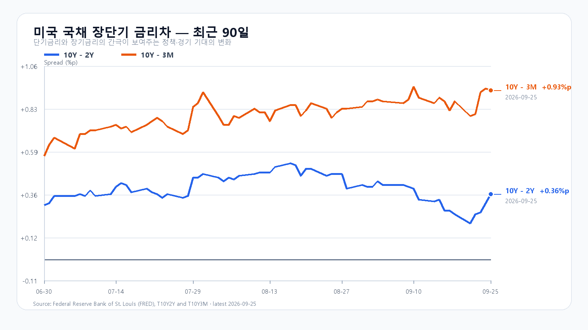
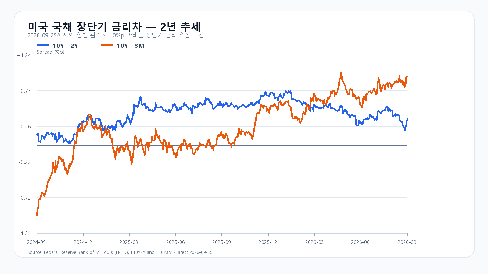

AI 인프라 수요는 여전히 가격으로 확인된다. 9월 25일 미국 정규장에서 SOXX는 1.17%, SMH는 1.01% 올랐고 Akamai는 Anthropic과 약 116억 달러 규모의 장기 컴퓨팅 용량 계약을 공시했다. DDR5 16Gb 현물도 57.667달러로 0.29% 상승했다. 공급 계약과 메모리 가격은 AI 서버 투자가 수요의 바닥을 받치고 있음을 보여 준다.
하지만 KOSPI가 9월 23일 7,080.92로 마감한 뒤 연휴를 마친 첫 장이다. 미국 10년물은 5.17%로 올라 AI 밸류에이션의 할인율 부담이 사라지지 않았다. NXT에서도 삼성전자는 284,500원(-0.35%), SK하이닉스는 1,831,000원(-1.66%)으로 약세였다. 전주 미국 반도체 강세를 지수 상승폭으로 다시 더하기보다, 7,155선 접근 때 국내 수급과 메모리 대형주의 동행을 확인해야 한다.
기본 시나리오는 KOSPI 7,020~7,155, 확률 55%다. AI 수요 계약이 하단을 지지하지만 장기금리와 대형주 분화가 상단을 제한하는 경우다. 7,155를 넘고 외국인·프로그램이 함께 순매수로 기울면 7,155 초과~7,300의 강세 범위를 본다. 반대로 7,020 아래로 밀리며 두 수급이 함께 순매도로 돌아서면 6,850~7,020 미만의 약세 범위로 전환한다.
메모리 현물은 품목별로 갈렸다. DDR5 16Gb는 0.29% 올랐지만 DDR4 16Gb는 0.70% 내렸다. AI 서버용 고사양 메모리 수요와 주식시장의 당일 포지션은 같은 속도로 움직이지 않는다. KODEX 레버리지는 114,555원을 1차 지지, 116,975원을 반등 기준, 119,300원을 저항으로 둔다.
| 종가 시나리오 | 범위·확률 | 15시 20분 확인 조건 | 전환 신호 |
|---|---|---|---|
| 기본 | 7,020~7,155 · 55% | 7,020 이상 · 7,155 이하 · 외국인 매도 급확대 없음 | 범위 이탈 |
| 강세 | 7,155 초과~7,300 · 25% | 7,155 초과 · 외국인·프로그램 동반 순매수 | 7,155 아래 재진입 |
| 약세 | 6,850~7,020 미만 · 20% | 7,020 미만 · 외국인·프로그램 동반 순매도 | 7,020 회복 |
장중 고저 예상 범위는 6,800~7,350으로 둔다. 종가와 장중 범위의 목표 신뢰수준은 각각 90%이며, 과거 적중률을 뜻하지 않는다. 대응 점수는 공격 25, 관망 55, 방어 20이다.

